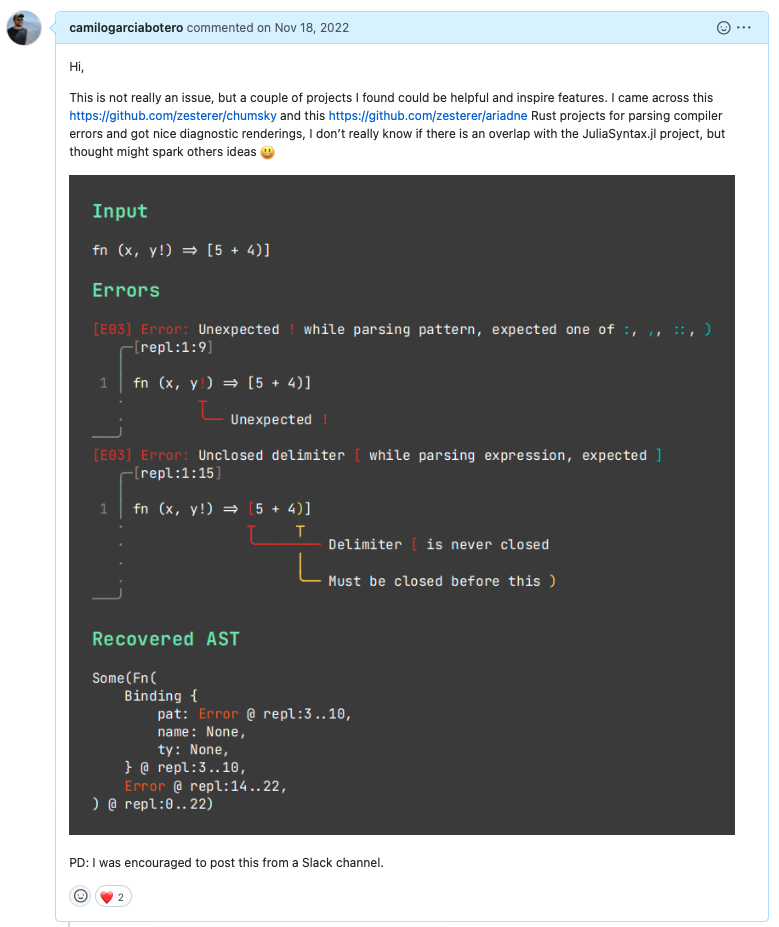

sqrt(9)[1] 3Julia
Join the slides at https://bit.ly/3FutJvK
![]()
It is multi-paradigm, combining features of imperative, functional, and object-oriented programming. Julia provides ease and expressiveness for high-level numerical computing, in the same way as languages such as R, MATLAB, and Python, but also supports general programming. To achieve this, Julia builds upon the lineage of mathematical programming languages, but also borrows much from popular dynamic languages, including Lisp, Perl, Python, Lua, and Ruby.
Free and open source (MIT licensed)
User-defined types are as fast and compact as built-ins
No need to vectorize code; devectorized code is fast
Designed for parallelism and distributed computation
Lightweight “green” threading (coroutines)
Unobtrusive yet powerful type system
Extensible conversions and promotions many types
Now just type julia on the terminal:

An integrated package manager Pkg.jl
help?> map
search: map map! mapfoldr mapfoldl mapslices mapreduce asyncmap asyncmap! macroexpand @macroexpand @macroexpand1 @atomicswap
map(f, c...) -> collection
Transform collection c by applying f to each element. For multiple collection arguments, apply f elementwise, and stop when
when any of them is exhausted.
See also map!, foreach, mapreduce, mapslices, zip, Iterators.map.
Examples
≡≡≡≡≡≡≡≡≡≡
julia> map(x -> x * 2, [1, 2, 3])
3-element Vector{Int64}:
2
4
6
julia> map(+, [1, 2, 3], [10, 20, 30, 400, 5000])
3-element Vector{Int64}:
11
22
33
...Unicode support and nice operators1:
The Project.toml and Manifest.toml
Project.toml
name = "GeneFinder"
uuid = "2bc6ee46-2158-4f5a-a720-91cb2d7cee64"
authors = ["Camilo García"]
version = "0.0.12"
[deps]
BioSequences = "7e6ae17a-c86d-528c-b3b9-7f778a29fe59"
BioSymbols = "3c28c6f8-a34d-59c4-9654-267d177fcfa9"
FASTX = "c2308a5c-f048-11e8-3e8a-31650f418d12"
GenomicFeatures = "899a7d2d-5c61-547b-bef9-6698a8d05446"
IterTools = "c8e1da08-722c-5040-9ed9-7db0dc04731e"
TestItemRunner = "f8b46487-2199-4994-9208-9a1283c18c0a"
TestItems = "1c621080-faea-4a02-84b6-bbd5e436b8fe"
[compat]
BioSequences = "3"
BioSymbols = "5"
FASTX = "2"
GenomicFeatures = "2"
IterTools = "1.4"
TestItemRunner = "0.2"
TestItems = "0.1"
julia = "1.8.0"
[extras]
BenchmarkTools = "6e4b80f9-dd63-53aa-95a3-0cdb28fa8baf"
Test = "8dfed614-e22c-5e08-85e1-65c5234f0b40"
[targets]
test = ["Test"]Manifest.toml
# This file is machine-generated - editing it directly is not advised
julia_version = "1.9.0-beta3"
manifest_format = "2.0"
project_hash = "d7e8e483246564e1b32e0aa41735942a5def23eb"
[[deps.Artifacts]]
uuid = "56f22d72-fd6d-98f1-02f0-08ddc0907c33"
[[deps.Automa]]
deps = ["Printf", "ScanByte", "TranscodingStreams"]
git-tree-sha1 = "d50976f217489ce799e366d9561d56a98a30d7fe"
uuid = "67c07d97-cdcb-5c2c-af73-a7f9c32a568b"
version = "0.8.2"
[[deps.Base64]]
uuid = "2a0f44e3-6c83-55bd-87e4-b1978d98bd5f"
[[deps.BioGenerics]]
deps = ["TranscodingStreams"]
git-tree-sha1 = "0b581906418b93231d391b5dd78831fdc2da0c82"
uuid = "47718e42-2ac5-11e9-14af-e5595289c2ea"
version = "0.1.2"A Julia function could be created as simple as:
We can use the types to help the compiler infer the function:
The if-elseif-else syntax,
Or, better… Ternary operators:
(metaprogrmming: code that transforms code)
Here is an example of how to create one1
Return Julia’s intermediate representation (IR) of the function:
The Nanosoldier Report
lorenz! (generic function with 1 method)Now let’s solved:
retcode: Success
Interpolation: specialized 4th order "free" interpolation, specialized 2nd order "free" stiffness-aware interpolation
t: 1263-element Vector{Float64}:
0.0
3.5678604836301404e-5
0.0003924646531993154
0.0032624077544510573
0.009058075635317072
0.01695646895607931
0.02768995855685593
0.04185635042021763
0.06024041165841079
0.08368541255159562
⋮
99.30760258626904
99.39665422328268
99.49536147459878
99.58822928767293
99.68983993598462
99.77864535713971
99.85744078539504
99.93773320913628
100.0
u: 1263-element Vector{Vector{Float64}}:
[1.0, 0.0, 0.0]
[0.9996434557625105, 0.0009988049817849058, 1.781434788799208e-8]
[0.9961045497425811, 0.010965399721242457, 2.146955365838907e-6]
[0.9693591634199452, 0.08977060667778931, 0.0001438018342266937]
[0.9242043615038835, 0.24228912482984957, 0.0010461623302512404]
[0.8800455868998046, 0.43873645009348244, 0.0034242593451028745]
[0.8483309847495312, 0.6915629321083602, 0.008487624590227805]
[0.8495036669651213, 1.0145426355349096, 0.01821208962127994]
[0.9139069574560097, 1.4425599806525806, 0.03669382197085303]
[1.088863826836895, 2.052326595543049, 0.0740257368585531]
⋮
[4.669609096878053, 3.061564434452441, 25.1424735017959]
[4.188801916573263, 4.617474401440693, 21.09864175382292]
[5.559603854699961, 7.905631612648314, 18.79323210016923]
[8.556629716266505, 12.533041060088328, 20.6623639692711]
[12.280585075547771, 14.505154761545633, 29.332088452699942]
[11.736883151600804, 8.279294641640229, 34.68007510231878]
[8.10973327066804, 3.2495066495235854, 31.97052076740117]
[4.958629886040755, 2.194919965065022, 26.948439650907677]
[3.8020065515435855, 2.787021797920187, 23.420567509786622]The Lorenz attractor

This talk was heavily influenced by What’s great about Julia from Jakob Nybo, and Why Julia? presentation as well. I also recommend this Discourse thread about Why is Julia so great? that summarizes many other talks and resources.
A glimpse into The Julia Language